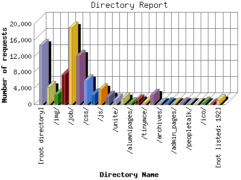

The Directory Report analyzes accesses to this web site's directories. This information can be useful in determining the most requested areas.
This report shows results with at least 0.010000 percent of the total bytes. This report is sorted by amount of bytes transferred.

| Directory Name | Number of requests | Percentage of the bytes | |
|---|---|---|---|
| 1. | [root directory] | 14,777 | 25.02% |
| 2. | /scripts/ | 4,292 | 18.79% |
| 3. | /img/ | 2,538 | 13.25% |
| 4. | /ram/ | 7,512 | 9.71% |
| 5. | /job/ | 19,144 | 8.55% |
| 6. | /images/ | 12,033 | 6.09% |
| 7. | /css/ | 6,023 | 4.55% |
| 8. | /fonts/ | 2,606 | 4.03% |
| 9. | /js/ | 3,781 | 3.47% |
| 10. | /dev/ | 1,912 | 2.11% |
| 11. | /unite/ | 1,204 | 1.35% |
| 12. | /admin/ | 1,470 | 0.66% |
| 13. | /alumnipages/ | 332 | 0.53% |
| 14. | /activity/ | 1,088 | 0.49% |
| 15. | /tinymce/ | 504 | 0.41% |
| 16. | /uploads/ | 2,450 | 0.29% |
| 17. | /archives/ | 110 | 0.13% |
| 18. | /alumni_images/ | 256 | 0.11% |
| 19. | /admin_pages/ | 86 | 0.10% |
| 20. | /class/ | 365 | 0.10% |
| 21. | /peopletalk/ | 206 | 0.07% |
| 22. | /search+alumni/ | 56 | 0.05% |
| 23. | /ico/ | 382 | 0.02% |
| 24. | /thumbs/ | 32 | 0.01% |
| [not listed: 192] | 978 | 0.09% | |
This report was generated on November 24, 2013 21:04.
Report time frame March 23, 2012 00:00 to November 24, 2013 23:58.
| Web statistics report produced by: analog 5.1 / Report Magic 2.21 |